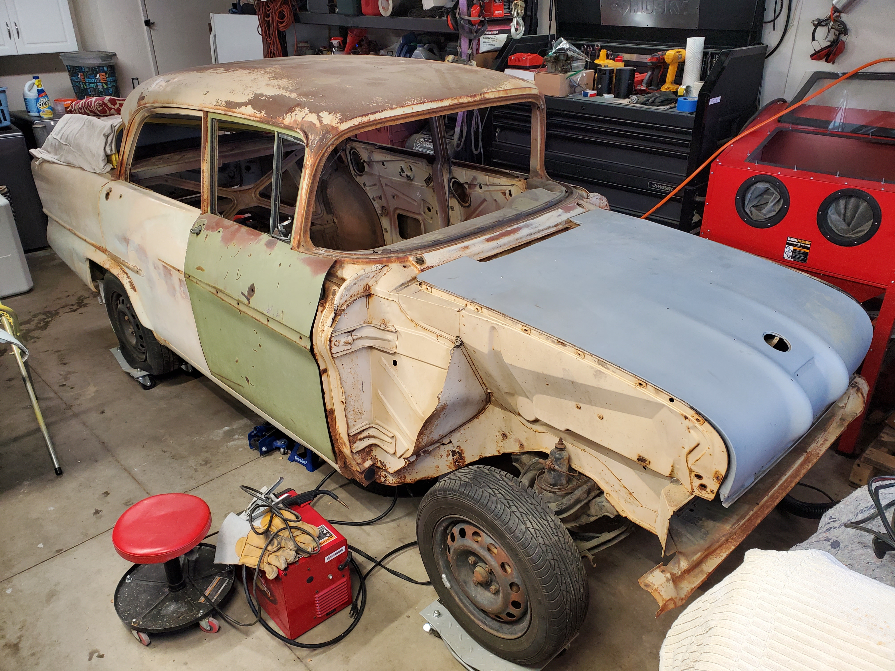
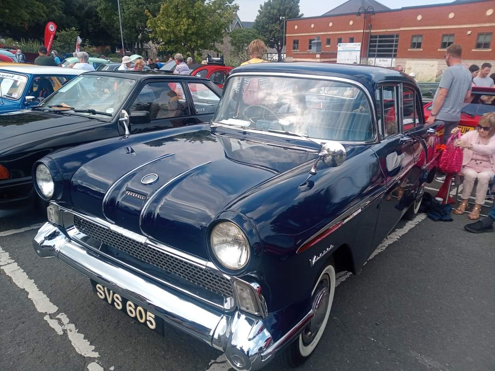

Welcome!
This website chronicles my journey restoring a 1957 Vauxhall Victor F—a rare classic that has been part of my life for decades. What began as a spark of curiosity in 1999 has turned into a long-term restoration adventure. I first noticed the car sitting quietly in a tow yard among a collection of other vehicles, and each day as I passed by, I couldn’t help but admire it. Its styling reminded me of a “miniature” 1957 Chevy Bel Air, and from that moment on, I knew I wanted to bring it back to life.
The Backstory
After months of driving past, I finally decided to stop and ask the owner about the car. It turned out the Vauxhall belonged to the retired owner of the towing company and was part of a small collection he had kept for himself. When I asked if it was for sale, he immediately told me no. He spoke fondly of the car and explained that he simply couldn’t part with it.
Still, I couldn’t give up. I stopped by a few more times, and over the weeks, we became friendly. He was older, and I think he enjoyed having someone around to talk about cars with. On my second visit, I asked again if he’d sell it—but once more, his answer was no. Even so, I could tell he appreciated my persistence and how much I admired his little Vauxhall.
By the third or fourth visit, things changed. This time, he smiled and told me to make an offer. I suggested $1,000. He countered with $2,000. We finally shook hands at $1,500—and just like that, the car was mine. I couldn’t wait to bring it home and begin the restoration journey.
My Goal
My goal is to restore the car as close to its original factory condition as possible. From the engine specifications to the paint and upholstery, I want it to look and feel exactly as it did the day it rolled off the assembly line nearly 70 years ago. For me, there’s something incredibly special about seeing a classic car preserved in its authentic form—a true time capsule of automotive history.
The greatest challenge has been sourcing original parts. As you can imagine, finding components made specifically for a 1957 Vauxhall Victor F is no easy task. Thankfully, with persistence—and a lot of help from online communities and Facebook groups—I’ve managed to track down most of what I need. Since the car was imported from England, much of the hunt has led me to sellers in the UK.
Although the car pictured here is not my own, it perfectly captures my vision. Painted in its final shade of Empress Blue, this example serves as my inspiration and benchmark for the restoration. With patience, determination, and a passion for keeping history alive, I’m excited to see this project through to the finish.